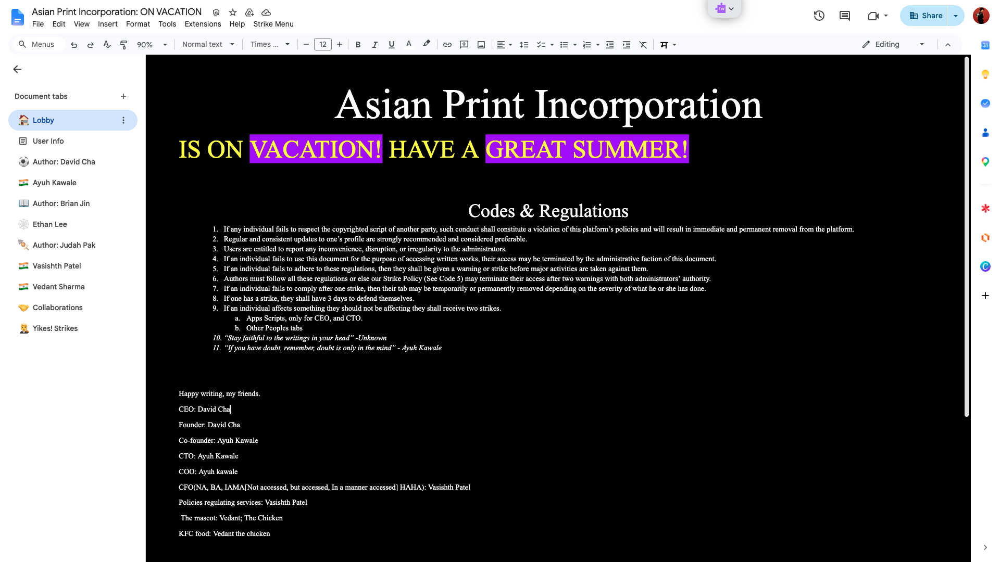
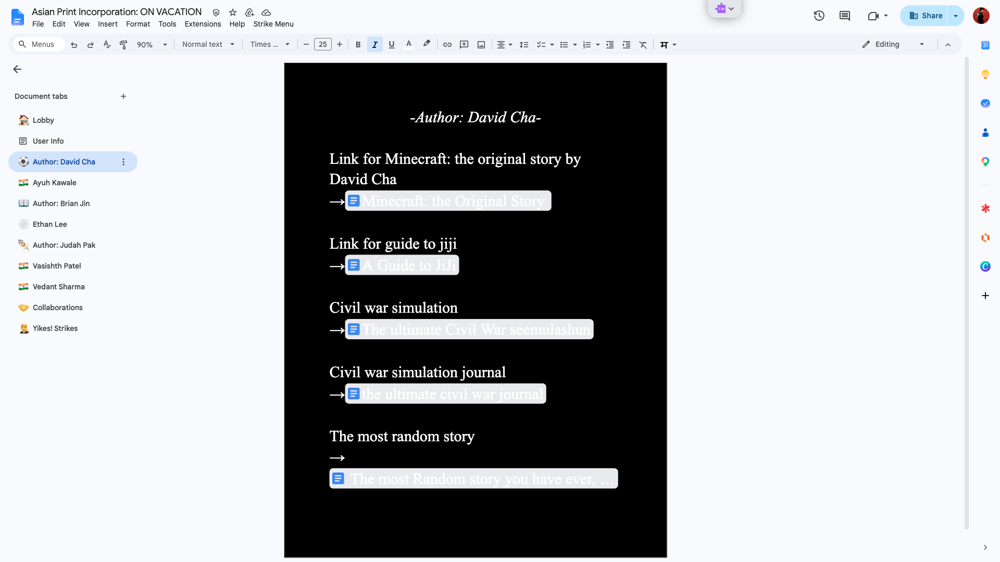

Our story
So our story started on a sunny morning of April, 2026. A 5th grader named Ayuh Kawale had an idea. He noticed that most of the
classmates in his class had a lot of stories. So from his experience with Google Drive™ the search bar was
disorganized and very hard to use.
Think of it this way, you have a lot of slideshows, sheets, and docs, and you have to find a doc. It is very hard. So Ayuh asked his friend David to found the company Asian Print Incorporation.
The reason they founded this company was so people could find their stories easily.


as of updated of July 18, 2026
"Imagination is more important than knowledge. Knowledge is limited.
Imagination encircles the world." ~Albert Einstien
"Two things are infinite: the universe and human stupidity; and I'm
not sure about the universe." ~Albert Einstien
"Stay faithful to the writings in your head" ~Unknown
"If you have doubt, remember, doubt is only in the mind" ~Ayuh
Kawale
“You’re not writing on a blank sheet of paper- rather, you’re writing on a special white sheet of paper. A lot has been done for you already. Why stop trying then?” ~David Cha
“Don’t get bored and don’t get fired” ~Jensen Huang
© 2026 Asian Print Incorporation. All rights reserved. Co-engeneered with Google Gemini ©